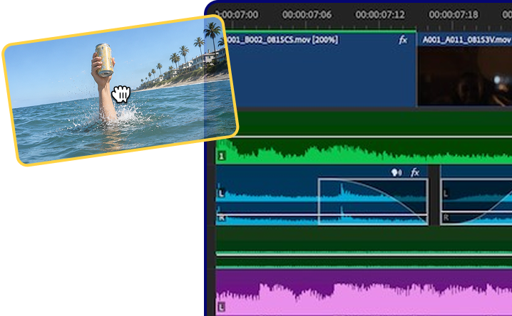

Why Windows Explorer doesn't show video thumbnails
Windows builds a thumbnail by decoding the first frames of a video. When that fails, you get a generic film icon instead of a preview. The usual culprits:
- Thumbnails are turned off. A setting in Folder Options (or Performance Options) tells Explorer to show plain icons instead of previews. This is the most common cause.
- A codec is missing. Windows 11 ships without HEVC and has no native MKV thumbnailer, so .mkv, .hevc and some .mov files show nothing at all.
- The thumbnail cache is corrupted. Old or blank thumbnails get stuck and never refresh.
- The files are on a network drive or a huge folder. Explorer often gives up generating previews when there are too many files or the drive is remote.
Fix 1: Turn thumbnails back on
In File Explorer, open View > Options > Folder Options > View tab and make sure "Always show icons, never thumbnails" is unchecked. Then press Windows + R, type SystemPropertiesPerformance, and confirm "Show thumbnails instead of icons" is ticked. This alone fixes most cases for common formats like MP4.
Fix 2: Install the missing video codecs
If MP4 files preview but MKV or HEVC files don't, you are missing a codec. Install HEVC Video Extensions from the Microsoft Store for H.265 footage. For MKV and other formats, a thumbnail handler like Icaros or Media Preview (both built on FFmpeg) adds previews Windows can't generate on its own. They are free, but they are shell extensions that can slow Explorer down on big folders.
Fix 3: Clear the thumbnail cache
If thumbnails are stuck or stubbornly blank, the cache may be corrupted. Open Disk Cleanup, tick "Thumbnails", and clear it (or delete the thumbcache_*.db files in your AppData folder). Windows rebuilds the cache automatically as you browse.
Fix 4: Preview a clip without opening it
To peek at a video without launching a player, install Microsoft PowerToys and use Peek (Ctrl + Space on a selected file), or a tool like QuickLook (Spacebar). Both pop up a quick preview window, one file at a time.
Where these fixes fall short
Even when they work, you are still looking at a single static frame per file, usually the very first frame, which is often a black fade-in or a slate. You can preview one clip at a time, there are no tags, no search across your footage, and on a folder with hundreds or thousands of clips Explorer becomes slow and clumsy. For anyone with a real video library, home videos, b-roll, a stock of footage, that isn't browsing, it's guesswork.
A faster way: a real video library with hover previews
This is exactly the gap Reelio fills. Instead of one static thumbnail, you hover over a clip and it scrubs through its frames, so you preview what is actually inside it without ever opening a player. Tag clips by color, search your whole library in an instant, and drag a clip straight into Adobe Premiere Pro, DaVinci Resolve or back into Explorer with its name and metadata intact.
Reelio reads your existing folders, builds proper previews with a bundled copy of FFmpeg, and runs 100% local, no cloud, no account, no telemetry. Free for up to 25 clips, then a one-time payment for unlimited. The video library Windows Explorer never gave you.
Hover-scrub previews
2, 3, or 8 frames depending on duration. Sprite-sheets pre-baked. No clicks, no playback, just truth at a glance.
Color tags & search
Drag clips onto color tags, star your favorites, then find anything with instant search. Everything flows smoothly, like a wave being ridden.
Drag into your editor
Drop straight into Premiere Pro, DaVinci Resolve, or back to Explorer. OLE metadata is set so the clip lands with the right name in your bin.

Frequently asked questions
Why don't my MKV files show thumbnails in Windows 11?
Windows 11 has no built-in MKV thumbnail support and ships without some codecs, so .mkv files show a blank icon. Install a thumbnail handler like Icaros, or use a video library app that generates its own previews, to see MKV thumbnails.
How do I preview a video without opening it in Windows?
Use PowerToys Peek (Ctrl + Space) or QuickLook (Spacebar) for a quick one-at-a-time preview, or use Reelio to hover-scrub previews across your whole library at once without opening a player.
Why are my video thumbnails black?
Windows usually grabs the very first frame of a clip, which is often a black fade-in or a slate. Tools that sample multiple frames, or hover-scrub previews, avoid this by showing real frames from across the clip.